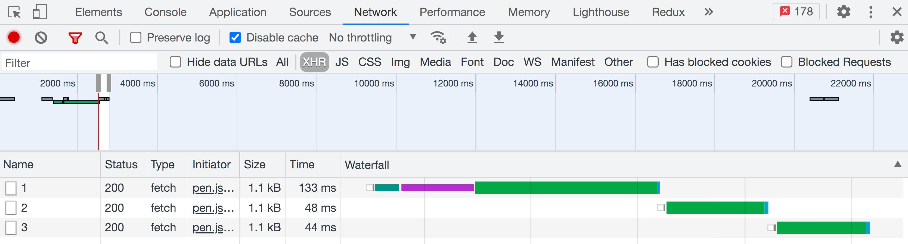
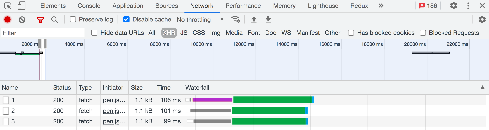

Асинхронні функції
Робота з бекендом може бути заплутаною - після однієї асинхронної операції необхідно зробити ще один запит на сервер на підставі отриманих даних, і так кілька разів. Наприклад, на сторінці профілю користувач хоче подивитися список друзів. Перше, що необхідно зробити, - підтвердити його права доступу до цієї сторінки на бекенді. Для цього потрібно зробити запит до my-api.com/me. Якщо бекенд дозволить доступ, у відповіді ми отримаємо унікальний токен доступу до захищених ресурсів.
const fetchFriends = () => {
return fetch("my-api.com/me").then(token => {
console.log(token);
});
};
Потім необхідно зробити запит профілю користувача з my-api.com/profile, але профіль - неповний, він містить тільки критично важливу інформацію: ідентифікатор користувача без списку друзів.
const fetchFriends = () => {
return fetch("my-api.com/me")
.then(token => {
return fetch(`my-api.com/profile?token=${token}`);
})
.then(user => {
console.log(user.id);
});
};
І тільки після цього можна зробити запит списку друзів з my-api.com/users/:userId/friends.
const fetchFriends = () => {
return fetch("my-api.com/me")
.then(token => {
return fetch(`my-api.com/profile?token=${token}`);
})
.then(user => {
return fetch(`my-api.com/users/${user.id}/friends`);
});
};
fetchFriends()
.then(friends => console.log(friends))
.catch(error => console.error(error));
Погодьтесь, не найзручніший для читання код, хоча операції - порівняно прості. Оскільки ми передаємо функції-обробники методу then(), утворюються ялинкоподібні вкладеності.
Погодьтесь, не найзручніший для читання код, хоча операції - порівняно прості. Оскільки ми передаємо функції-обробники методу then(), утворюються ялинкоподібні вкладеності.
const fetchFriends = async () => {
const token = await fetch("my-api.com/me");
const user = await fetch(`my-api.com/profile?token=${token}`);
const friends = await fetch(`my-api.com/users/${user.id}/friends`);
return friends;
};
fetchFriends()
.then(friends => console.log(friends))
.catch(error => console.error(error));
Синтаксис async/await
Асинхронні функції (async/await) - зручний спосіб написання асинхронного коду, який зовні стає схожим на синхронний. В основі синтаксису async/await лежать проміси, тому він не блокує основний потік виконання програми.
Для оголошення асинхронної стрілочної функції, перед списком параметрів додаємо ключове слово async. Всередині неї можна використовувати оператор await і праворуч від нього поставити щось, що поверне проміс. Метод response.json() також повертає проміс, тому ставимо await.
const fetchUsers = async () => {
const response = await fetch("https://jsonplaceholder.typicode.com/users");
const users = await response.json();
return users;
};
fetchUsers().then(users => console.log(users));
Коли інтерпретатор зустрічає await, він призупиняє виконання цієї функції (не тільки скрипта) і чекає, доки не виконається проміс праворуч від await. Щойно проміс виконався - виконання функції відновлюється і на рядку нижче нам доступний результат асинхронної операції.
- Оператор await можна використовувати тільки у тілі асинхронної (async) функції.
- Оператор await призупиняє функцію, доки проміс не виконається (fulfilled або rejected).
- Якщо проміс виконався успішно (fulfilled), оператор await поверне його значення.
- Якщо проміс був відхилений з помилкою (rejected), оператор await викине помилку.
- Асинхронна функція завжди повертає проміс, тому будь-яке значення, що повертається, буде його значенням.
- Якщо не вказати значення, що повертається, повернеться проміс зі значенням undefined.
Будь-яка функція може бути асинхронною, чи то метод об'єкта, класу, колбек, оголошення або інлайн функція. Всі вони зможуть використовувати оператор await і обов'язково повернуть проміс, тому що будуть асинхронними функціями.
// Function declaration
async function foo() {
// ...
}
// Functional expression
const foo = async function () {
// ...
};
// Arrow function
const foo = async () => {
// ...
};
// Object method
const user = {
async foo() {
// ...
},
};
// Class method
class User {
async foo() {
// ...
}
}
Обробка помилок
Якщо результат асинхронної функції (проміс) не використовується у зовнішньому коді, помилки обробляються в тілі функції конструкцією try...catch. Значення параметра error в блоці catch - це помилка, яку згенерує await, якщо проміс буде відхилений.
const fetchUsers = async () => {
try {
const response = await fetch("https://jsonplaceholder.typicode.com/users");
const users = await response.json();
console.log(users);
} catch (error) {
console.log(error.message);
}
};
fetchUsers();
Якщо результат асинхронної функції (проміс) використовується у зовнішньому (глобальному) коді, тобто за межами інших асинхронних функцій, помилки обробляються колбеком методом catch(). Значення параметра error в методі catch() - це помилка, яку згенерує await, якщо проміс буде відхилений.
const fetchUsers = async () => {
const response = await fetch("https://jsonplaceholder.typicode.com/users");
const users = await response.json();
return users;
};
fetchUsers()
.then(users => console.log(users))
.catch(error => console.log(error));
Так працювати не буде - await можна використовувати тільки в тілі асинхронної функції.
const fetchUsers = async () => {
const response = await fetch("https://jsonplaceholder.typicode.com/users");
const users = await response.json();
return users;
};
// ❌ SyntaxError: await is only valid in async function
const users = await fetchUsers();
Якщо результат асинхронної функції використовується в іншій асинхронній функції, помилки обробляються конструкцією try...catch. Значення параметра error в блоці catch - це помилка, яку згенерує await, якщо проміс буде відхилений.
const fetchUsers = async () => {
const response = await fetch("https://jsonplaceholder.typicode.com/users");
const users = await response.json();
return users;
};
const doStuff = async () => {
try {
const users = await fetchUsers();
console.log(users);
} catch (error) {
console.log(error.message);
}
};
doStuff();
Паралельні запити
Якщо одночасно необхідно зробити декілька запитів, використовувати синтаксис async/await потрібно дуже обережно. У наступному прикладі будуть виконані три послідовних запити, тому що виконання асинхронної функції призупиняється, коли інтерпретатор зустрічає await. Крім того, парс результатів запитів також буде послідовний, що забере більше часу.
const fetchUsers = async () => { const baseUrl = "https://jsonplaceholder.typicode.com"; const firstResponse = await fetch(`${baseUrl}/users/1`); const secondResponse = await fetch(`${baseUrl}/users/2`); const thirdResponse = await fetch(`${baseUrl}/users/3`); const firstUser = await firstResponse.json(); const secondUser = await secondResponse.json(); const thirdUser = await thirdResponse.json(); console.log(firstUser, secondUser, thirdUser); }; fetchUsers();
На вкладці Network добре видно, що запуск кожного наступного запиту очікує, доки завершиться попередній. Тобто вони виконуються послідовно , що забирає більше часу, який дорівнює сумі тривалостей усіх запитів. Це нормально, якщо запити залежать один від одного, тобто наступний використовує результат попереднього.
У нашому випадку вони повністю незалежні, тому потрібно запустити їх паралельно . Для цього створюється масив промісів, після чого використовується метод Promise.all(), для очікування їх виконання. Масив промісів створюється методами map(), filter() тощо, залежно від завдання.
const fetchUsers = async () => { const baseUrl = "https://jsonplaceholder.typicode.com"; const userIds = [1, 2, 3]; // 1. Створюємо масив промісів const arrayOfPromises = userIds.map(async userId => { const response = await fetch(`${baseUrl}/users/${userId}`); return response.json(); }); // 2. Запускаємо усі проміси паралельно і чекаємо на їх завершення const users = await Promise.all(arrayOfPromises); console.log(users); }; fetchUsers();
За такого підходу, запити запускаються паралельно , що економить час очікування їх виконання, який дорівнює тривалості «найповільнішого» з них. Такий прийом підходить тільки у разі, якщо запити не залежать один від одного.
Переконайтеся в цьому, відкривши інструменти розробника на живому прикладі. Також ми додали кнопку, клікаючи на яку, виконується запит, і обробили можливу помилку конструкцією try...catch. Це стандартний AJAX-код з використанням асинхронних функцій.
See the Pen lesson-22-parallel-requests by goit-academy (@goit-academy) on CodePen.